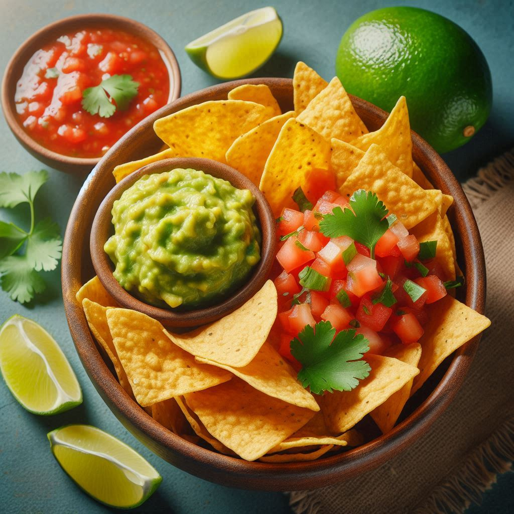

Homemade Tortilla Chips Recipe

Description
Tortilla chips made with corn tortillas.
You can use any other type of tortilla aswell.
Ingredients:
- 6 small corn tortillas (flour tortillas work too, but corn gives a crispier texture)
- 2 tbsp vegetable oil (or olive oil)
- ½ tsp salt (adjust to taste)
- ½ tsp paprika or chili powder (optional, for extra flavor)
Instructions:
- 6 small corn tortillas (flour tortillas work too, but corn gives a crispier texture)
- 2 tbsp vegetable oil (or olive oil)
- ½ tsp salt (adjust to taste)
- ½ tsp paprika or chili powder (optional, for extra flavor)